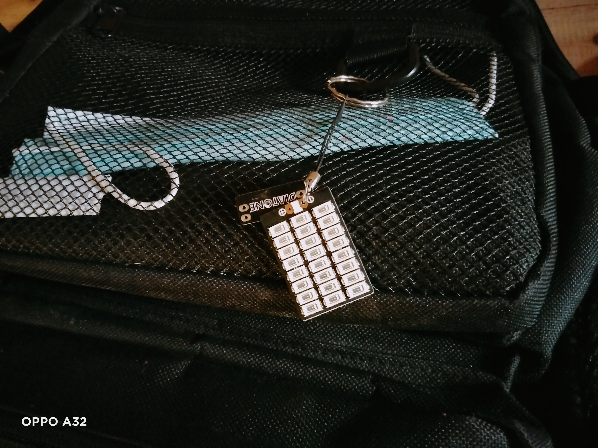

kebai<!DOCTYPE html>
<html lang="zh-CN">
<head>
    <meta charset="UTF-8">
    <meta name="viewport" content="width=device-width, initial-scale=1.0">
    <title>kebai04 | 个人空间</title>
    <link rel="stylesheet" href="https://cdnjs.cloudflare.com/ajax/libs/font-awesome/6.0.0/css/all.min.css">
    <style>
        :root {
            --primary-color: rgba(255,255,255,0.1);
            --accent-color: #7c93fb;
        }

        /* macOS 开启动画 */
        @keyframes folderOpen {
            0% { transform: scale(0) rotate(15deg); filter: blur(20px); }
            100% { transform: scale(1) rotate(0); filter: blur(0); }
        }

        .loader {
            position: fixed;
            top: 0;
            left: 0;
            width: 100%;
            height: 100%;
            background: rgba(0,0,0,0.95);
            display: flex;
            justify-content: center;
            align-items: center;
            animation: folderOpen 1s cubic-bezier(0.23, 1, 0.32, 1) forwards;
            z-index: 9999;
        }

        body {
            background: #0a0a0a;
            color: rgba(255,255,255,0.9);
            font-family: 'Helvetica Neue', system-ui;
            overflow-x: hidden;
        }

        /* 个人背景 */
        .profile-bg {
            position: fixed;
            top: 0;
            left: 0;
            width: 100%;
            height: 100vh;
            background: linear-gradient(45deg, #1a1a2e 0%, #16213e 100%);
            z-index: -1;
            background-attachment: fixed;
        }

        /* 头像样式 */
        .avatar {
            width: 220px;
            height: 220px;
            border-radius: 50%;
            border: 3px solid var(--accent-color);
            position: relative;
            margin: -60px auto 20px;

            box-shadow: 0 0 30px rgba(124, 147, 251, 0.3);
            transition: transform 0.3s ease;
        }

        .avatar:hover {
            transform: rotate(15deg) scale(1.1);
        }

        /* 动态卡片 */
        .moment-card {
            background: var(--primary-color);
            backdrop-filter: blur(10px);
            border-radius: 15px;
            padding: 20px;
            margin: 20px auto;
            max-width: 600px;
            transition: all 0.3s cubic-bezier(0.175, 0.885, 0.32, 1.275);
            cursor: pointer;
            position: relative;
            overflow: hidden;
        }

        .moment-card::before {
            content: '';
            position: absolute;
            top: 0;
            left: -100%;
            width: 200%;
            height: 100%;
            background: linear-gradient(
                90deg,
                transparent,
                rgba(255,255,255,0.1),
                transparent
            );
            transition: 0.5s;
        }

        .moment-card:hover::before {
            left: 100%;
        }

        /* 响应式布局 */
        @media (max-width: 768px) {
            .moment-card {
                width: 90%;
            }
            .avatar {
                width: 100px;
                height: 100px;
            }
        }
    </style>
</head>
<body>
    <div class="loader"></div>

    <div class="profile-bg"></div>

    <main class="container">
        
        <div class="moment-card" 
        onclick="window.open('https://www.douyin.com/user/your_id')"
        style="background: linear-gradient(45deg, #000000 0%, #FE2C55 100%);">
       <h2 style="color: #fff">
           <i class="fab fa-tiktok" style="color: #69C9D0; margin-right: 10px;"></i>
           最新抖音作品
           <i class="fab fa-tiktok" style="color: #FE2C55; margin-left: 8px;"></i>
       </h2>
       <p style="color: rgba(255,255,255,0.9)">点击进入我的抖音主页 →</https://www.douyin.com/user/MS4wLjABAAAAj3DDZEKvmjXu1EHbsdW0s2Wjy5IK-JkIePznuWF2I1YgqZslj0U1-RRpopPWCEGA?from_tab_name=main>
   </div>   
        <div class="moment-card" onclick="window.open('https://github.com/yourprofile')">
            <h2>💻 技术日志 <i class="fab fa-github"></i></h2>
            <p>查看最新的动态 →</p>
        </div>
    </main>

    <script>
        // 页面加载完成后隐藏loader
        window.addEventListener('load', () => {
            document.querySelector('.loader').style.display = 'none';
        });

        // 卡片悬停效果
        document.querySelectorAll('.moment-card').forEach(card => {
            card.addEventListener('mousemove', (e) => {
                const rect = card.getBoundingClientRect();
                const x = e.clientX - rect.left;
                const y = e.clientY - rect.top;
                card.style.transform = `perspective(1000px) rotateX(${(y - rect.height/2)/10}deg) rotateY(${-(x - rect.width/2)/10}deg)`;
            });

            card.addEventListener('mouseleave', () => {
                card.style.transform = 'none';
            });
        });
    </script>
</body>
</html>
